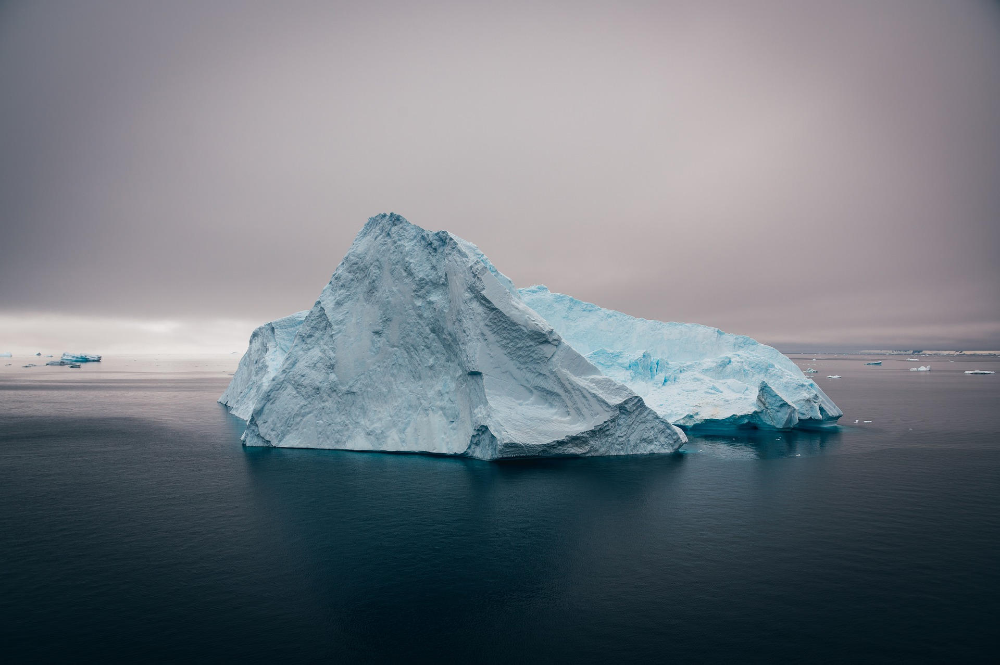

Geography
Antarctica is Earth's southernmost
continent. It contains the geographic South Pole and is situated in the Antarctic region of the Southern
Hemisphere, almost entirely south of the Antarctic Circle, and is surrounded by the Southern Ocean. At
14,200,000 square kilometres (5,500,000 square miles), it is the fifth-largest continent and nearly
twice
the size of Australia. It is by far the least populated continent, with around 5,000 people in the
summer
and around 1,000 in the winter. About 98% of Antarctica is covered by ice that averages 1.9 km (1.2 mi;
6,200 ft) in thickness.
Antarctica, on average, is the coldest, driest, and windiest continent, and has the highest average
elevation of all the continents. Most of Antarctica is a polar desert, with annual precipitation of 200
mm (8 in) along the coast and far less inland; yet 80% of the world freshwater reserves are stored
there,
enough to raise global sea levels by about 60 metres (200 ft) if all of it were to melt. The
temperature in Antarctica has dropped to −89.2 °C (−128.6 °F) (or even −94.7 °C or −138.5 °F, as
measured
from space), though the average for the third quarter (the coldest part of the year) is −63 °C (−81 °F).
Organisms native to Antarctica include many types of algae, bacteria, fungi, plants, protista, and
certain
animals, such as mites, nematodes, penguins, seals and tardigrades. Vegetation, where it occurs, is
tundra.
Antarctica was the last region on Earth to be discovered, likely unseen until 1820 when the Russian
expedition of Fabian Gottlieb von Bellingshausen and Mikhail Lazarev on Vostok and Mirny sighted the
Fimbul
ice shelf. The continent remained largely neglected for the rest of the 19th century because of its
harsh
environment, lack of easily accessible resources, and isolation. In January 1840, land at Antarctica was
discovered for the first time, almost simultaneously, by the United States Exploring Expedition, under
Lieutenant Charles Wilkes; and a separate French expedition under Jules Dumont d'Urville. The latter
made a
temporary landing. The Wilkes expedition—though it did not make a landing—remained long enough in the
region
to survey and map some 1,300 kilometres (800 mi) of the continent. The first confirmed landing was by a
team
of Norwegians in 1895.
Antarctica is governed by parties to the Antarctic Treaty System. Twelve countries signed the Antarctic
Treaty in 1959, and thirty-eight have signed it since then. The treaty prohibits military activities,
mineral mining, nuclear explosions and nuclear waste disposal. It supports scientific research and
protects
the continent's ecology. Between 1,000 and 5,000 people from many countries reside at research stations
scattered across the continent.
history
Antarctica has no indigenous population.
Belief in the existence of a Terra Australis—a vast continent in the far south of the globe to "balance"
the
northern lands of Europe, Asia and North Africa—had prevailed since the times of Ptolemy in the 1st
century
CE. Even in the late 17th century, after explorers had found that South America and Australia were not
part
of the fabled "Antarctica", geographers believed that the continent was much larger than its actual
size.
Integral to the story of the origin of Antarctica's name is that it was not named Terra Australis—this
name
was given to Australia instead, because of the misconception that no significant landmass could exist
further south. Explorer Matthew Flinders, in particular, has been credited with popularising the
transfer of
the name Terra Australis to Australia. He justified the titling of his book A Voyage to Terra Australis
(1814) by writing in the introduction:
There is no probability, that any other detached body of land, of nearly equal extent, will ever be
found in
a more southern latitude; the name Terra Australis will, therefore, remain descriptive of the
geographical
importance of this country and of its situation on the globe: it has antiquity to recommend it; and,
having
no reference to either of the two claiming nations, appears to be less objectionable than any other
which
could have been selected.
European maps continued to show this hypothetical land until Captain James Cook's ships, HMS Resolution
and
Adventure, crossed the Antarctic Circle on 17 January 1773, in December 1773 and again in January 1774.
Cook came within about 120 km (75 mi) of the Antarctic coast before retreating in the face of field ice
in
January 1773. In 1775, Cook called the existence of a polar continent "probable" and in another copy of
his journal he wrote: "firmly believe it and it's more than probable that we have seen a part of
it".
According to various organisations (the National Science Foundation, NASA, the University of
California, San Diego, the Russian State Museum of the Arctic and Antarctic, among others),
ships captained by three men sighted Antarctica or its ice shelf in 1820: Fabian Gottlieb von
Bellingshausen, a captain in the Imperial Russian Navy, Edward Bransfield, a captain in the Royal Navy,
and
Nathaniel Palmer, an American sealer.
The First Russian Antarctic Expedition led by Bellingshausen and Mikhail Lazarev on the 985-ton
sloop-of-war
Vostok ("East") and the 530-ton support vessel Mirny ("Peaceful") reached a point within 32 km (20 mi)
of
Queen Maud's Land and recorded the sight of an ice shelf at 69°21′28″S 2°14′50″W, on 27 January
1820, which became known as the Fimbul ice shelf. This happened three days before Bransfield sighted the
land of the Trinity Peninsula of Antarctica, as opposed to the ice of an ice shelf, and ten months
before
Palmer did so in November 1820. The first documented landing on Antarctica was by the American sealer
John
Davis, apparently at Hughes Bay, near Cape Charles, in West Antarctica on 7 February 1821, although some
historians dispute this claim. The first recorded and confirmed landing was at Cape Adare in 1895
(by the Norwegian-Swedish whaling ship Antarctic).
The oldest known human remains in Antarctica was a skull that belonged to a young woman on Yamana Beach
at
the South Shetland Islands, which dates back to 1819 to 1825, who was likely part of a sealing
expedition.
She was found in 1985.
On 22 January 1840, two days after the discovery of the coast west of the Balleny Islands, some members
of
the crew of the 1837–40 expedition of Jules Dumont d'Urville disembarked on the highest islet of a group
of coastal rocky islands about 4 km from Cape Géodésie on the coast of Adélie Land where they took some
mineral, algae, and animal samples, erected the French flag and claimed French sovereignty over the
territory.
Explorer James Clark Ross passed through what is now known as the Ross Sea and discovered Ross Island
(both
of which were named after him) in 1841. He sailed along a huge wall of ice that was later named the Ross
Ice
Shelf. Mount Erebus and Mount Terror are named after two ships from his expedition: HMS Erebus and
Terror. Mercator Cooper landed in East Antarctica on 26 January 1853.
During the Nimrod Expedition led by Ernest Shackleton in 1907, parties led by Edgeworth David became the
first to climb Mount Erebus and to reach the South Magnetic Pole. Douglas Mawson, who assumed the
leadership
of the Magnetic Pole party on their perilous return, went on to lead several expeditions until retiring
in
1931. In addition, Shackleton and three other members of his expedition made several firsts in December
1908 – February 1909: they were the first humans to traverse the Ross Ice Shelf, the first to traverse
the
Transantarctic Mountains (via the Beardmore Glacier), and the first to set foot on the South Polar
Plateau.
An expedition led by Norwegian polar explorer Roald Amundsen from the ship Fram became the first to
reach
the geographic South Pole on 14 December 1911, using a route from the Bay of Whales and up the Axel
Heiberg
Glacier. One month later, the doomed Scott Expedition reached the pole.
Richard E. Byrd led several voyages to the Antarctic by plane in the 1930s and 1940s. He is credited
with
implementing mechanised land transport on the continent and conducting extensive geological and
biological
research. In 1937, Ingrid Christensen became the first woman to step onto the Antartic
mainland. Caroline Mikkelsen had landed on an island of Antarctica, earlier in 1935.
It was not until 31 October 1956, that anyone set foot on the South Pole again; on that day a U.S. Navy
group led by Rear Admiral George J. Dufek successfully landed an aircraft there. The next women to step
onto the South Pole were Pam Young, Jean Pearson, Lois Jones, Eileen McSaveney, Kay Lindsay and Terry
Tickhill in 1969.
In the southern hemisphere summer of 1996–97 the Norwegian explorer Børge Ousland became the first
person to
cross Antarctica alone from coast to coast. Ousland got aid from a kite on parts of the distance. All
attempted crossings, with no kites or resupplies, that have tried to go from the true continental edges,
where the ice meets the sea, have failed due to the great distance that needs to be covered.For this
crossing, Ousland also holds the record for the fastest unsupported journey to the South Pole, taking
just
34 days.
Climate
Antarctica is the coldest of Earth's continents. It was ice-free until about 34
million years ago, when
it
became covered with ice. The lowest natural air temperature ever recorded on Earth was −89.2 °C (−128.6
°F) at the Russian Vostok Station in Antarctica on 21 July 1983. A lower air temperature of −94.7 °C
(−138.5 °F) was recorded in 2010 by satellite—however, it may have been influenced by ground
temperatures
and was not recorded at a height of 2 metres (7 ft) above the surface as required for official air
temperature records. Temperatures reach a minimum of between −80 °C (−112 °F) and −89.2 °C (−128.6 °F)
in the interior in winter and reach a maximum of between 5 °C (41 °F) and 15 °C (59 °F) near the coast
in
summer.Signy Island recorded a temperature of 19.8 °C (67.6 °F) in January 1982, the
highest temperature ever recorded in the Antarctic region (including non-continental islands).
Antarctica is a frozen desert with little precipitation; the South Pole receives less than 10 mm (0.4
in)
per year, on average. Sunburn is often a health issue as the snow surface reflects almost all of the
ultraviolet light falling on it. Given the latitude, long periods of constant darkness or constant
sunlight
create climates unfamiliar to human beings in much of the rest of the world.
The aurora australis, commonly known as the southern lights, is a glow observed in the night sky near
the
South Pole created by the plasma-full solar winds that pass by the Earth. Another unique spectacle is
diamond dust, a ground-level cloud composed of tiny ice crystals. It generally forms under otherwise
clear
or nearly clear skies, so people sometimes also refer to it as clear-sky precipitation. A sun dog, a
frequent atmospheric optical phenomenon, is a bright "spot" beside the true sun.
Facts
Antarctica is home to several volcanoes
and two of them are active. Mount
Erebus, the
second-highest
volcano in
Antarctica is the southernmost active
volcano on Earth.
Although there are low levels of precipitation
in Antarctica, meteorological wonders
abound and
diamond dust is
one
of them!
Diamond dust is made
of tiny ice crystals that precipitate
out of humid air near the Earth’s
surface. It’s a
little like
an icy fog. As ice crystals hang suspended
in the air, sunlight causes them to
sparkle, creating a
glittering effect
that looks like a million tiny floating
diamonds. Diamond dust is also
responsible
for
beautiful optical phenomena
like sun dogs, halos and light pillars.